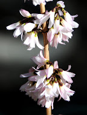

|  |
Ageratum (/əˈdʒɛrətəm/), (whiteweed in the USA), is a genus of 40[3] to 60 tropical and warm temperate flow-ering annuals and perennials from the family Asteraceae,tribe Eupatorieae. Most species are native to Central America and Mexico but four are native to the United States.
They form tussocks or small hills. They grow to a height of 30 in. The opposite leaves are cordate or oval, hairy or tomentose. The margins are slightly toothed or serrate.The leaves form compact clusters.
The fluffy flowers are lavender-blue, pink, lilac, or white; and spread in small compound umbels. They give small, dry fruits.
Download as book
|